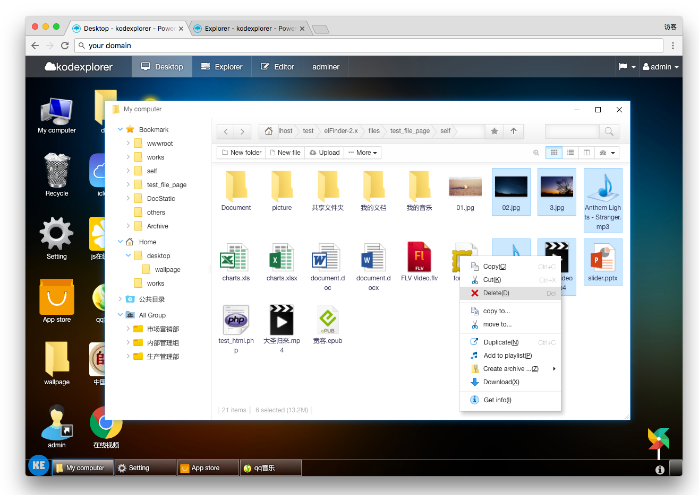

Ya os he hablado en más de una ocasión sobre KodExplorer. KodExplorer es un servicio web, que nos permite navegar por carpetas, descargar o subir archivos, editar archivos de texto, visualizar videos o audios en streaming,… a través del navegador web.

En esta versión del docker, podemos enlazar en la sesión de administrador, con una de las carpetas de nuestro servidor, Raspberry,… La ruta de esta carpeta la tienes que introducir donde aparece <RUTA>. Yo he montado una nube cifrada que tengo mediante rclone, de esta manera me permite subir y bajar archivos a la nube remotamente, desde el navegador web.
Puedes ver una demo aquí.
docker run -d -p 80:80 --name kodexplorer -v $HOME/docker/kodexplorer:/var/www/html -v <RUTA>:/var/www/html/data/User/admin/home ugeek/kodexplorer:arm
docker run -d -p 80:80 --name kodexplorer -v $HOME/docker/kodexplorer:/var/www/html -v <RUTA>:/var/www/html/data/User/admin/home ugeek/kodexplorer:amd64
La primera vez que iniciamos KodExplorer, nos pedirá que introduzcamos dos veces la contraseña de la cuenta admin, que va a ser la que vamos a utilizar para enlazar con nuestra carpeta local en la <RUTA>.
Tras iniciar el servicio, KodExplorer nos pedirá que actualicemos, ya que hay una versión más actualizada no disponible actualmente en GitHub. Le daremos a actualizar.
Listo!!!! Ya tenemos nuestro KodExplorer totalmente funcional y actualizado a la última
Publicado por Angel el lunes 09 septiembre del 2019
También te puede interesar:
Powered by org-bash-blog
Writing in orgmode whith emacs

Este obra está bajo una licencia de Creative Commons Reconocimiento-NoComercial-CompartirIgual 4.0 Internacional.